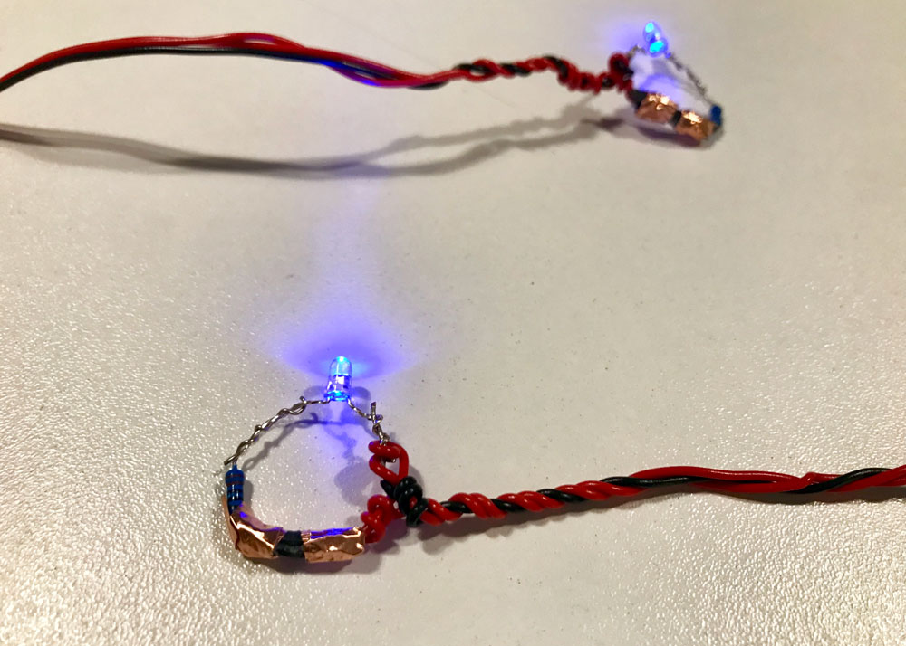

Week 2: Simple Switch System [LAB]
Sept 17, 2018
For this weeks lab of creating a simple switch system, I wanted to create a switch system that changes the brightness of the LEDs upon contact of each other. Rather than creating a simple break point between a closed circuit for a switch (so that the LED turns on and off), I wanted to see if I can change the value of resistance being used in the circuit to increase / decrease the current passing through the LEDs. After playing around with circuits, I came up with what I am calling "high five rings". The LEDs on the rings, when they come to contact with one another, will become brighter than they are when not in contact.
Materials used:
- 220Ω resistor * 2
- 10kΩ resistor * 2
- Blue LED * 2
- Conductive tape
- Fabric tape
- Wires
- Breadboard
- Arduino - used ONLY to power the breadboard


Above, the image on the left is my illustration of the circuit that I created for the rings. The exposed wire connected to the 5V power comes in contact to another piece of exposed wire connected between the 220Ω and 10KΩ resistors and brightens the LEDs. The image on the above right is a circuit diagram of one of the rings.
Above image is a picture of the finished "product". Couple of things to note here is that the "exposed wire" part of diagram had to be covered with conductive tape for two reasons: 1) to fix its position and 2) to increase the area of contact. Additionally, fabric tape was used to separate out different parts of wiring of the ring that was exposed.
Below is a video documentation of how the interaction of the high five rings works:
Stuff I learned:
- It is good to constantly test the circuit to make sure everything is still connected the right way when permanently connecting / taping its sections.
- The "connectedness" of the circuits to the breadboard make the interaction difficult. Next time, use batteries!
- I twisted wires to secure them in place without having to solder. As a result, it was not pleasant when putting on / taking off the rings. It would probably have been good to heat shrinking rubber tubes!
Stuff I'm still not sure of:
- I wonder if this really is the best way to increase current. It doesn't seem particularly "safe" to have exposed wires. I think in this case, since the maximum voltage running through the circuit is only 5V, it is probably okay, but what would I do within a circuit that has higher current?